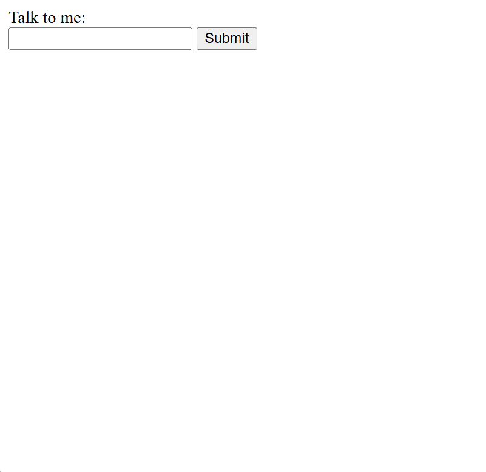

This project explores the intersection of generative artificial intelligence and philosophical questions about knowledge and understanding.

Justification: This is a simple LLM chatbot interface that allows users to input text and receive responses. The design is intentionally minimalistic to focus on the interaction between the user and language model. Also the response is a surprise to the user to demonstrate the unpredictability of LLMs.
Justification:
The response generated by the LLM chatbot is intentionally flirty to demonstrate how language models can produce unexpected outputs.
I was inspired to create a flirty chatbot after watching a video on TikTok where someone got engaged in a romantic relationship with an LLM chatbot.
I wanted to see if I could replicate this and to demonstrate how "human" LLM responses can be, to the point of pulling the strings of human emotions.
Epistemology is the philosophical study of knowledge—its nature, origin, and limits. In the context of generative AI, epistemology becomes particularly relevant as we grapple with fundamental questions: Can AI systems possess knowledge, or do they merely process information? What does it mean to "know" something, and does that definition apply to machines? As large language models become increasingly sophisticated in their outputs, understanding the distinction between knowledge and information becomes critical to evaluating their capabilities and limitations.
Our class discussions centered on a deceptively complex question: What is the difference between knowledge and information, and can computers have knowledge? This question initially troubled me because the boundary between the two concepts seemed blurry. Throughout our conversations, we used the philosophical definition of knowledge as justified, true belief—a standard that would prove essential in evaluating whether AI systems can truly be said to "know" anything.
One particularly illuminating discussion question was whether instinct can be considered knowledge. I struggled to distinguish between the two, but my classmate Nora offered a compelling insight: knowledge needs to be learned. Anything that exists prior to learning—such as instinct or reflexes—cannot qualify as knowledge. She illustrated this with a powerful example: when a baby cries in response to hunger, that crying is instinctual. The baby does not know that it is hungry; it simply reacts. Only later, through experience and learning, does the baby come to understand what hunger is and why it cries. This distinction between innate responses and learned understanding fundamentally shaped how I think about what counts as knowledge.
Another critical question emerged: Are consciousness and knowledge connected? Do you need to be conscious to have knowledge? My initial thought was that knowledge can be stored in unconscious objects, such as books. However, I quickly realized I was mistaking knowledge for information. My classmate Joe brought up a powerful argument that clarified this distinction: a book contains information, not knowledge, because it does not have beliefs. A book may store someone else's beliefs, but once recorded, those beliefs become information in the book rather than knowledge held by the book itself.
This argument has profound implications for whether computers have knowledge. Just as a book lacks beliefs, computers do not hold beliefs—they follow algorithms. What appears to be knowledge in a computer system is actually an algorithmic process operating on information. The computer does not believe anything it outputs; it simply calculates based on its programming and training data.
This realization connects directly to the reading we explored about "bullshit machines." The reading defined what bullshit means in the context of large language models and argued that LLMs are fundamentally bullshit machines. They do not have a ground truth; instead, they attempt to persuade users by generating information—whether true or not—that sounds plausible. This characterization feels apt and somewhat dystopian.
When using an LLM without understanding the algorithms and systems behind it, the technology behaves remarkably like a human typing back at you. It uses proper grammar, employs first-person pronouns, and can convincingly imitate human emotions in text. Yet beneath this facade, there is no consciousness. LLMs do not have a theory of mind—they cannot understand that others have beliefs, desires, and intentions distinct from their own, because they have none themselves. They operate according to completely different principles than human reasoning, driven by statistical patterns rather than understanding or belief.
Despite these discussions, several questions continue to puzzle me about the nature, origin, and limits of knowledge within generative AI. First, if knowledge requires belief and consciousness, is there any meaningful sense in which we can say an AI "understands" anything, or should we abandon that language entirely? The word "understanding" implies something deeper than pattern matching, yet LLMs demonstrate capabilities that seem to require some form of comprehension.
Second, how should we ethically navigate a world where machines that lack knowledge can nonetheless produce outputs that humans might mistake for wisdom? If users cannot distinguish between justified true belief and algorithmically generated text, does the philosophical distinction matter in practice? The gap between what LLMs are and what they appear to be raises troubling questions about trust, authority, and the future of human knowledge production.
Finally, I wonder whether future AI systems might develop something that qualifies as knowledge under our definition. If a system could form genuine beliefs, justify those beliefs through reasoning, and update them based on evidence, would that constitute knowledge? Or does knowledge require something ineffable that only conscious beings possess? These questions remain unresolved, and they will only become more urgent as generative AI continues to evolve.
References:
Bergstrom, C. T., & West, J. D. (2025). Modern-day oracles or bullshit machines? How to thrive in a ChatGPT world.
Online course. Retrieved 2/4/2026 from https://thebullshitmachines.com